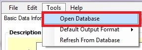
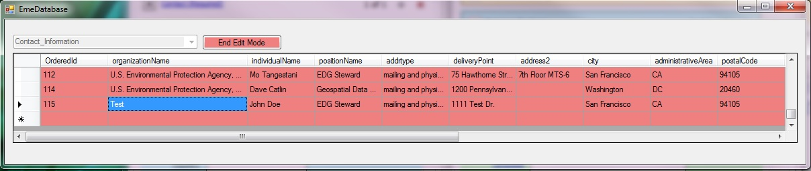
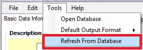

The following example outlines how to add an additional contact to the Contact_Information table, however, the user can follow the same guidelines when editing the BoundingBox, KeywordsEPA, KeywordsISO, KeywordsUser, and KeywordsPlace tables.
To add an additional contact to the preconfigured contact table:
1) Navigate to Tools --> Open Database.

2) Select the table of interest, e.g. Contact_Information, BoundingBox, KeywordsEPA, KeywordsISO, KeywordsUser, or KeywordsPlace.
3) Click on the Enable Edit Mode button (the table will turn pink when in edit mode)
4) Scroll to the bottom of the table and enter the contact information.

5) After adding a new contact, click on the End Edit Mode button (the table will turn back to green) and close the table.
6) The newly added contact should now display at the bottom of the list after clicking on the drop-down arrow in the Select Contact box.
To set the Default contact:
Setting a default contact allows the user to click on the "D"; button to autopopulate the fields with the default contact information found in the "Contact_Information" table.
1) Scroll to the far right of the table and click on the default checkbox next to the default contact record. Note that you will need to uncheck the currently selected default when selecting a new default. If you have more than one default selected, the record furthest down in the table will be used. In the next release we hope to allow you to cycle through multiple defaults by repeatedly clicking the "D" button.
2) After setting the default contact, click on the End Edit Mode button (the table will turn back to green) and close the table.
3) Choose Tools > 'Refresh From Database' to update the user interface. You will need to Refresh From Database for each tab where changes should be reflected.
